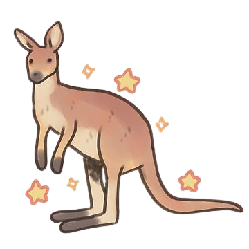
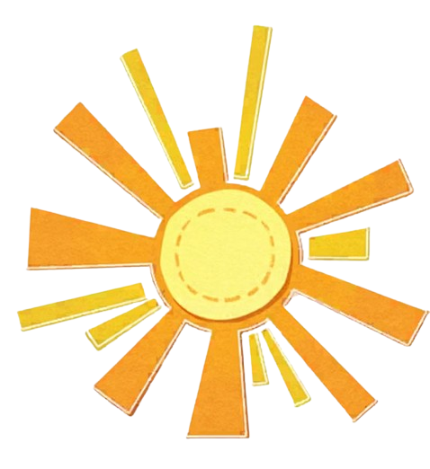
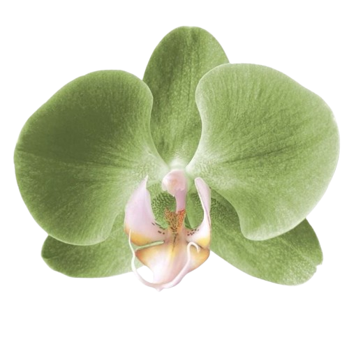
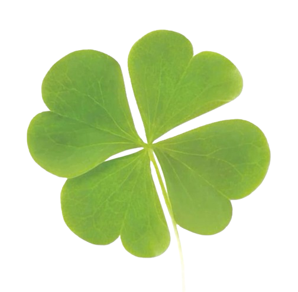

Sydney
📍 New South Wales
Kota terkenal dengan Sydney Opera House, Sydney Harbour dan berbagai pantai.
Sebuah perjalanan menuju negeri kanguru, gurun merah, pantai, kota dan alam liar! apakah anda siap??




Australia adalah negara yang memiliki perpaduan antara kota modern, pantai yang indah, alam liar, gurun luas, hutan hujan dan berbagai macam satwa yang unik. Negara ini memiliki banyak pilihan tempat wisata yang cocok untuk berbagai jenis perjalanan. Mulai dari Sydney yang penuh dengan bangunan terkenal, Great Barrier Reef yang berada di bawah laut, sampai Uluru yang berada di tengah lanskap Australia bagian tengah.

Australia merupakan salah satu tujuan wisata luar negeri yang menarik karena memiliki lingkungan yang sangat beragam. Di satu negara, wisatawan dapat menemukan kota modern, pantai, pegunungan, gurun, hutan dan wilayah laut yang luas. Perbedaan tersebut membuat perjalanan ke Australia dapat memberikan pengalaman yang berbeda-beda, tergantung tempat yang dikunjungi.
Salah satu hal yang membuat Australia mudah dikenali adalah satwa khasnya. Kanguru, koala, wombat dan berbagai jenis burung merupakan bagian dari keanekaragaman hayati Australia. Selain satwa, Australia juga memiliki banyak tempat yang mempunyai nilai alam dan budaya. Uluru dan Kata Tjuta, misalnya, bukan hanya menarik karena bentuk batuannya, tetapi juga memiliki arti penting bagi masyarakat Anangu.
Bagi wisatawan yang menyukai laut, Great Barrier Reef dapat menjadi pilihan. Kawasan ini memiliki ekosistem laut yang sangat luas dan terkenal karena terumbu karangnya. Sementara itu, wisatawan yang menyukai kota dapat mengunjungi Sydney atau Melbourne. Sydney terkenal dengan Sydney Opera House dan Sydney Harbour, sedangkan Melbourne dikenal dengan kehidupan seni, makanan dan kawasan kota yang menarik.
Australia juga cocok untuk orang yang menyukai perjalanan dengan suasana alam. Kakadu menawarkan pemandangan lahan basah dan kehidupan liar, sedangkan Great Ocean Road memberikan pengalaman perjalanan menyusuri pesisir. Dengan begitu banyak pilihan, Australia bukan hanya sebuah tempat untuk dikunjungi, tetapi juga sebuah negara dengan banyak pengalaman yang dapat ditemukan.
Setiap tempat di Australia mempunyai karakter yang berbeda lohh!! Pilih kategori di bawah untuk menyaring destinasi, lalu klik tombol pada kartu untuk membaca informasi lengkapnya!
Kota terkenal dengan Sydney Opera House, Sydney Harbour dan berbagai pantai.

Dunia bawah laut yang terkenal dengan terumbu karang dan kehidupan laut.

Formasi batu merah yang ikonik di tengah lanskap Australia bagian tengah.

Kota yang terkenal dengan seni, makanan, kafe dan laneway yang penuh karakter.

Kawasan alam yang memiliki lahan basah, satwa liar dan seni cadas Aborigin.

Pulau pasir terbesar di dunia yang memiliki pantai, hutan dan kehidupan liar.

Rute pesisir terkenal dengan pemandangan laut dan formasi Twelve Apostles.
Destinasi pantai populer dengan suasana liburan, surfing dan garis pantai yang panjang.

Terumbu karang yang terkenal dengan kehidupan laut dan perairan yang jernih.
Perkiraan panjang Great Barrier Reef.. wowww
Pulau pasir terbesar di dunia?!
Salah satu landmark alam Australia!
Australia memiliki banyak satwa unik..
Klik kanguru, koala, burung atau kura-kura yang muncul sebanyak mungkin sebelum waktunya habis!
Tandai pengalaman yang sudah masuk ke bucket list-mu!